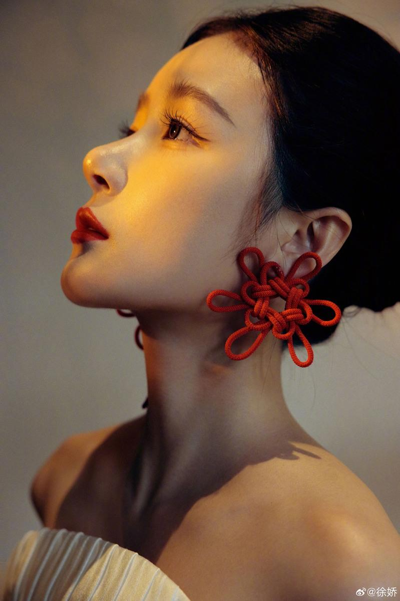
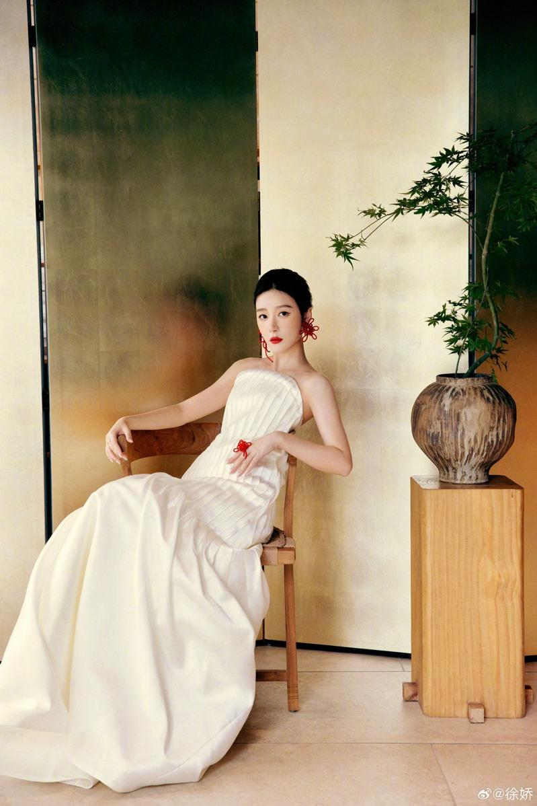
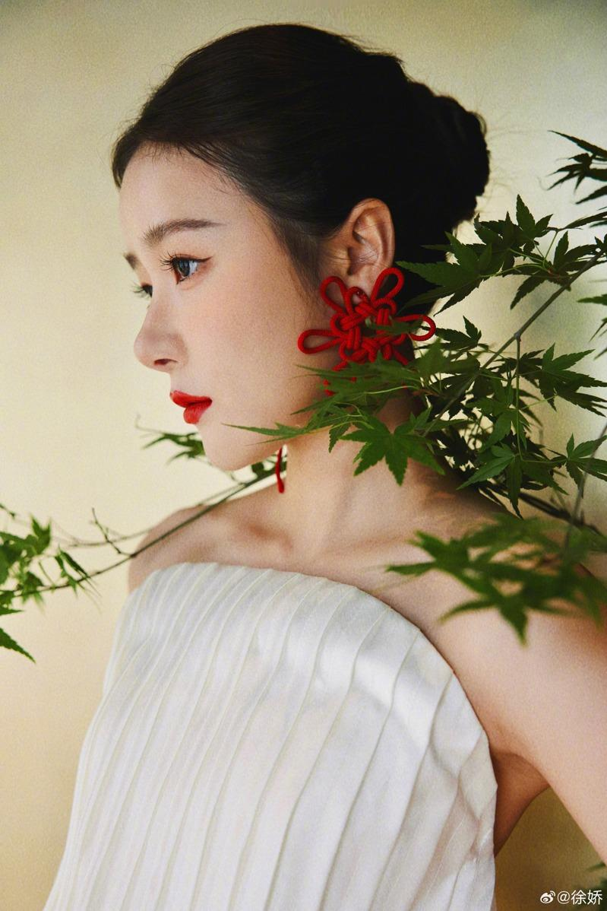

女星徐娇小时候因与周星驰合作「长江七号」爆红，与周星驰的情谊也有如父女，她后来赴美求学中断演艺事业，近几年才宣布正式回演艺圈。4日徐娇亮相「第37届大众电影百花奖」颁奖典礼，以一身白色平口露肩长裙现身，但五官被疑有进行加工升级。
27岁的徐娇现身颁奖礼时，盘起一头丝滑长发，白晳的肌肤加上鲜红色唇膏，让她绽放少女味道。徐娇亮相后，不少网民分享美照，留言指徐娇看似表情僵硬，笑容不如昔日一样天真烂漫。更有网民留意指，徐娇的五官疑似变得比往日更立体，鼻梁角度特别挺拔，引来大家猜测她曾否进行后天升级，所以令笑容显僵硬。

徐娇7月跟悬疑电影「默杀」剧组到处宣传，没想到真实模样惊吓不少网友。在零修图的镜头下，徐娇真实面貌尽现，可见当时她梳着比较贴服的发型，脸颊圆润，没有从前V脸的精致感，且油光满面，下巴位置还长了多粒暗疮，皮肤妆感厚重，整体上没有26岁该有的少女气息，反而散发着比较年长的味道，与早前在微博上贴的美照模样大相迳庭。
